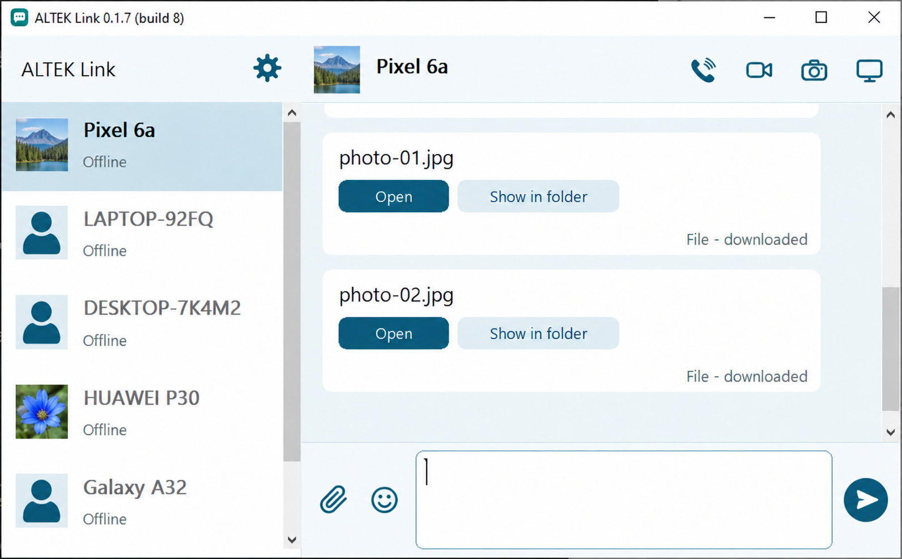
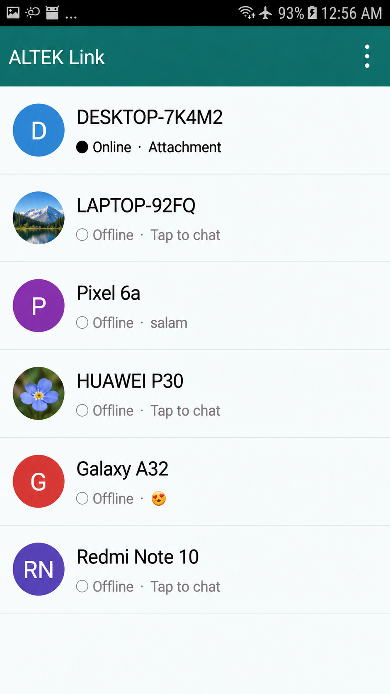

01 / SHARE
Photos, videos, files.
Send files between phones, or move them between Android and Windows. They travel over the local network, without an internet upload. A 100 MiB limit per file applies in the current release.
The photos on your phone. A file on your PC. A screen you need to see. Bring them together, right where they are.
ALTEK Link connects Android and Windows over your local network for messaging, file sharing, calls and remote screens. No account or internet connection required for local use.


Interface previews · Names and profile images changed for privacy
THE IDEA
KEEP IT CLOSE
When two devices are already on the same network, sharing between them should be straightforward. ALTEK Link gives you a familiar chat window for the things you want to send—and a few useful ways to stay connected beyond that.
EVERYDAY TOOLS
From a quick photo to a remote screen, the same simple idea runs through the whole app: communicate directly on your local network.
Send files between phones, or move them between Android and Windows. They travel over the local network, without an internet upload. A 100 MiB limit per file applies in the current release.
Send a link, a snippet of code or a message to the device beside you. The messenger-style interface feels familiar, even when there’s no internet.
Share a Windows or Android screen with a compatible PC or phone. Remote controls are available where the platform and its permissions allow them.
Make a video call to see a difficult-to-reach spot. Or arm an Android camera and let an approved contact view it on demand from another device.
Wi-Fi, or a phone hotspot. Internet access isn’t needed for ordinary local use. Devices do need to reach each other; hotspot isolation, firewall rules and hardware can affect discovery and performance.
A SMALL FOOTPRINT
The app is designed for devices old and new. These are the approximate sizes of the released files, before compression.
UNDER THE HOOD
A CLOSER LOOK
Android and Windows have separate implementations, connected by the same documented protocol. Here’s what happens behind the conversation.
Peers announce themselves using UDP broadcasts on the network. You can also probe a device by IPv4 address when automatic discovery isn’t available.
UDP / 45872Each installation has a self-signed certificate; connections use mutual TLS 1.2. Compare certificate fingerprints through a trusted channel to verify a contact—names and avatars alone don’t prove identity.
TLS / 1.2Messages are queued until acknowledged. Files are accepted by the receiver and verified with SHA-256 after transfer. An interrupted download starts again from the beginning.
SHA-256Video uses H.264: MediaCodec on Android and OpenH264 on Windows. Audio is PCM. Calls and screen streams use separate encrypted TCP connections; actual quality depends on the devices and network.
H.264 / TLSBEFORE YOU START
Android 5 and newer use the system screen-capture permission. On Android 4.1–4.4, screen capture requires root. Remote touch control can use Accessibility on Android 7 and newer; older versions require root. Features and performance vary by device, and not every hardware and OS combination has been tested.
For on-demand camera viewing, the Android camera endpoint must be armed and the contact explicitly permitted. Windows can view an armed Android camera; it does not currently act as that camera endpoint.
GET ALTEK LINK
Choose a version for each device. The Windows packages include the matching OpenH264 video codec.
Android 4.1 and later
Version 0.1.16 · ~146 KiB
Windows 7 and later
Version 0.1.7 · Build 8
Windows 7 and later
Version 0.1.7 · Build 8
Windows executables are not Authenticode-signed and may trigger a SmartScreen warning. These are early releases; check the release notes for details.